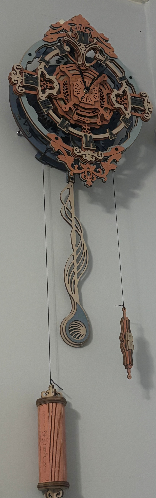
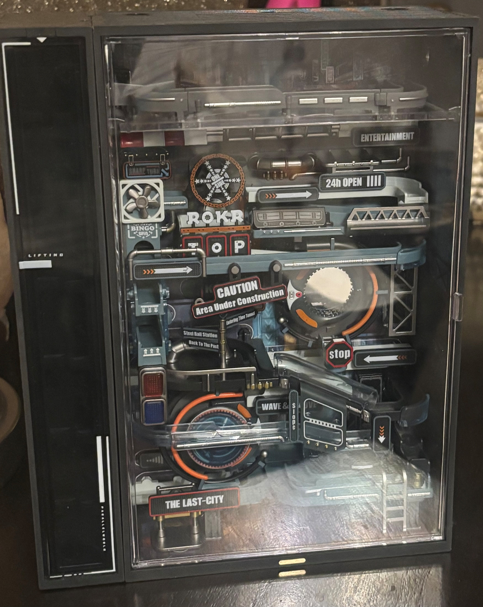
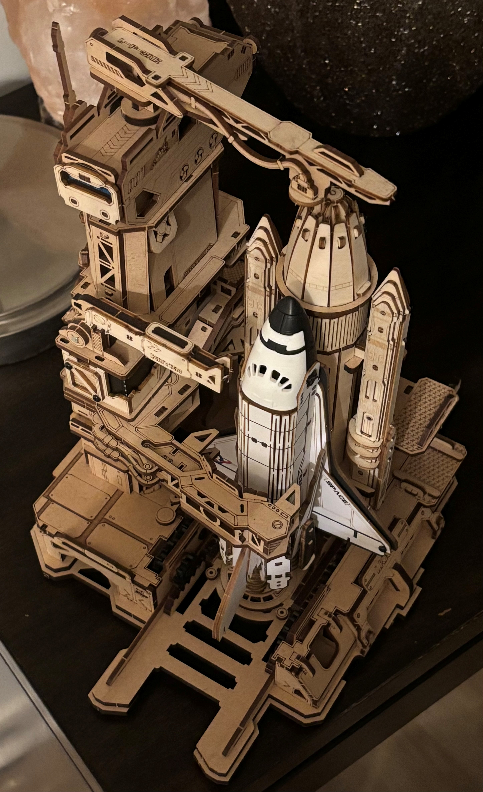
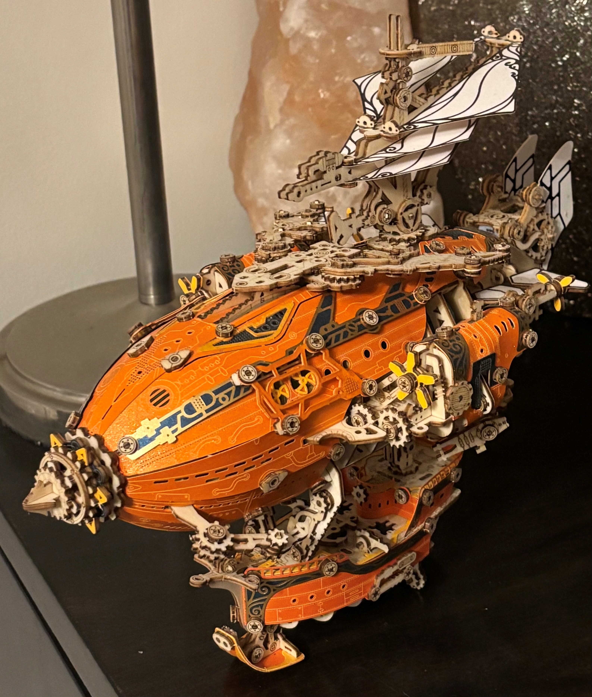
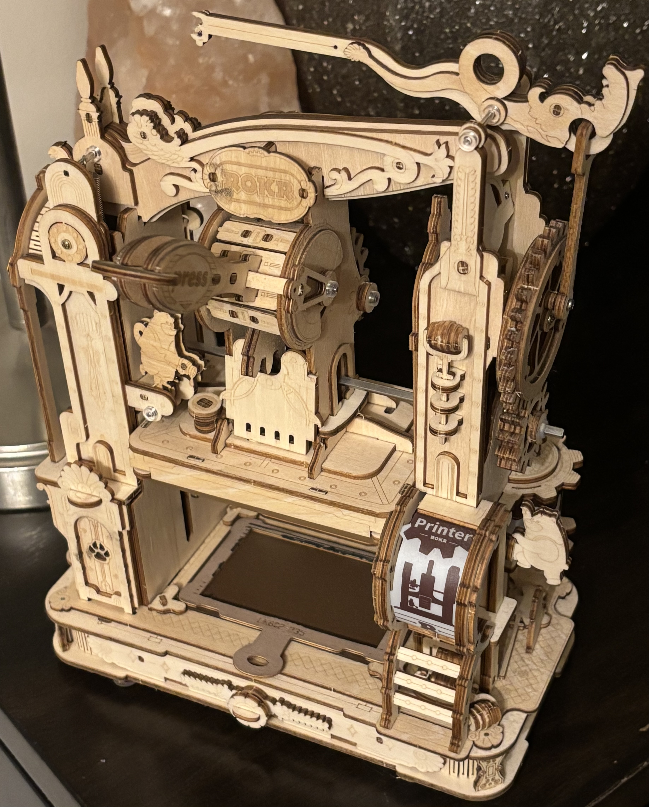
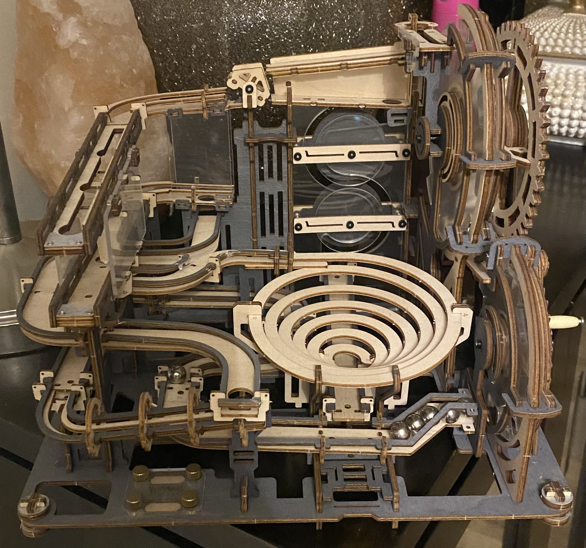
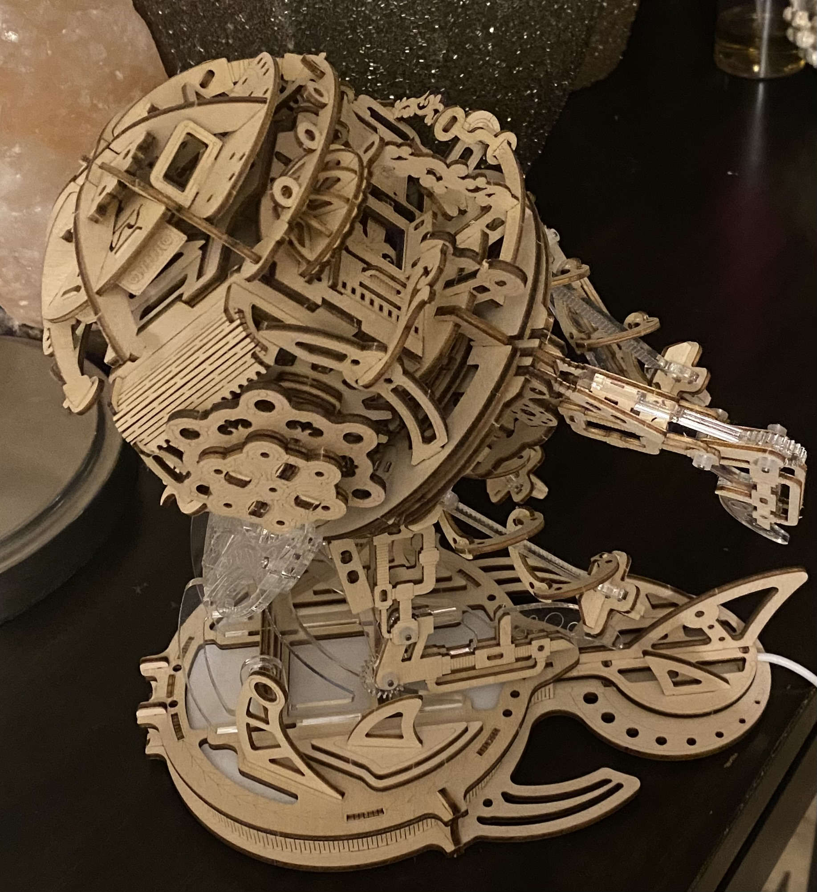
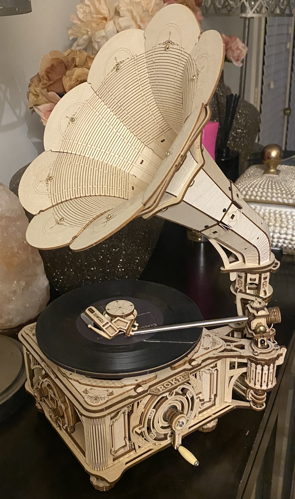

For me personally 3D puzzles are more than just a fun challenge. They're a meaningful way to learn and relax. I can lock myself in my room for hours just working on one. As you build piece by piece you're slowly strengthening your brain, calming your mind and bulding something you can be proud of.
These are a couple of 3D puzzles I built myself. Starting out I made a couple of mistakes the more I kept going the more I learned. I am very proud of them I display them in my room because I like looking at them.








Back to page 1